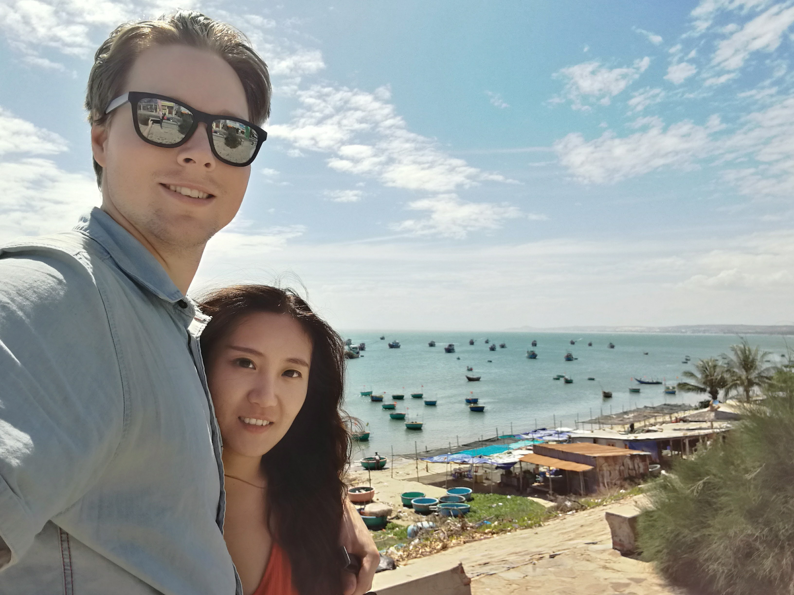
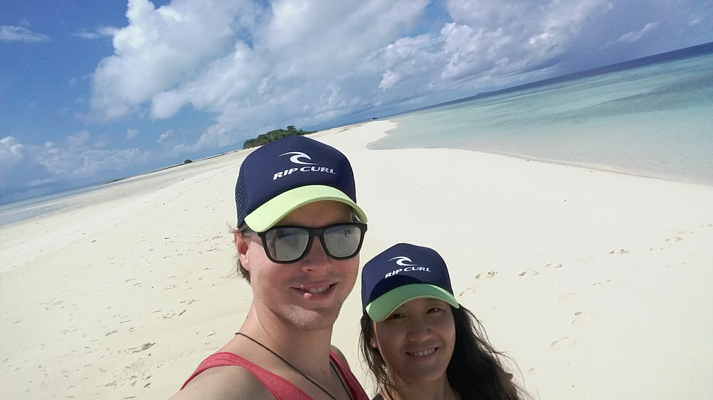
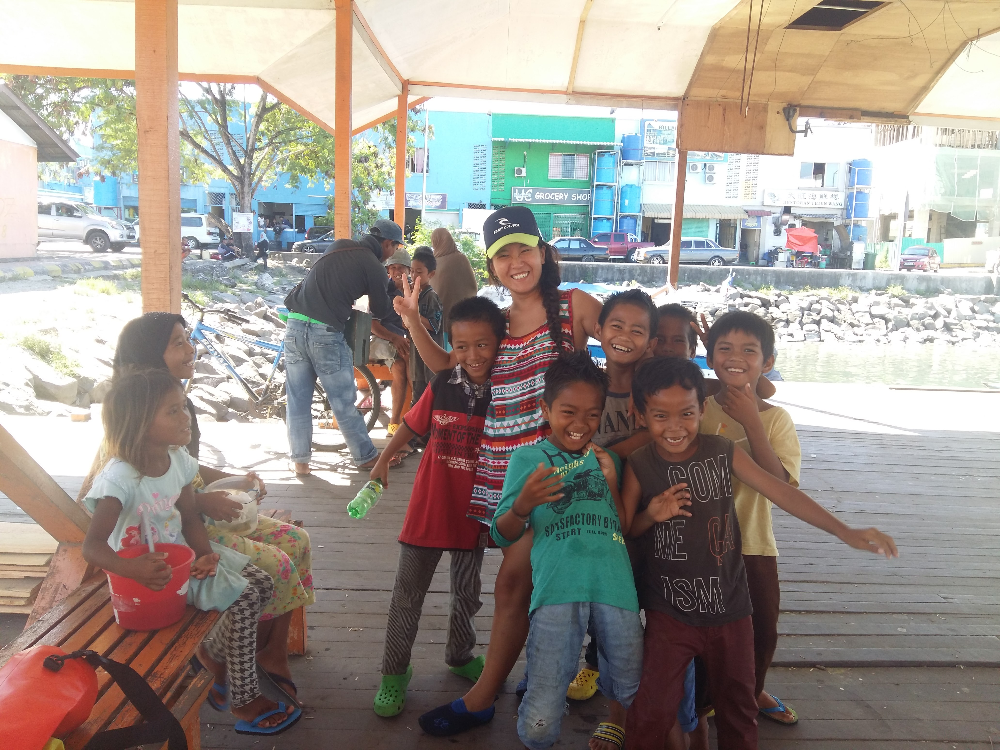

| Travel Podcast 1 | This is a podcast of one of my travel experiences in Sumatra, Indonesia. | |
| Travel Podcast 2 | This is a podcast of one of my travel experiences in Phuket, Thailand. | |
| Travel Podcast 3 | This is a podcast of one of my travel experiences in Semporna, East-Malaysia. | |
| Travel Image 1 | This is an image of us in Mueney, Vietnam. |  |
| Travel Image 2 | This is an image of us in Semporna, Malaysia. |  |
| Travel Image 3 | This is an image of me with local kids in Semporna, East-Malaysia. |  |
| Travel Video 1 | This is a video of a boat ride to Sihanovik Island, Cambodia. | |
| Travel Video 2 | This is a video of us on Sihanovik Island, Cambodia. | |
| Travel Video 3 | This is a video of us in Huahin, Thailand. |
I love travelling around the world. I have done it and I will continue to do so.